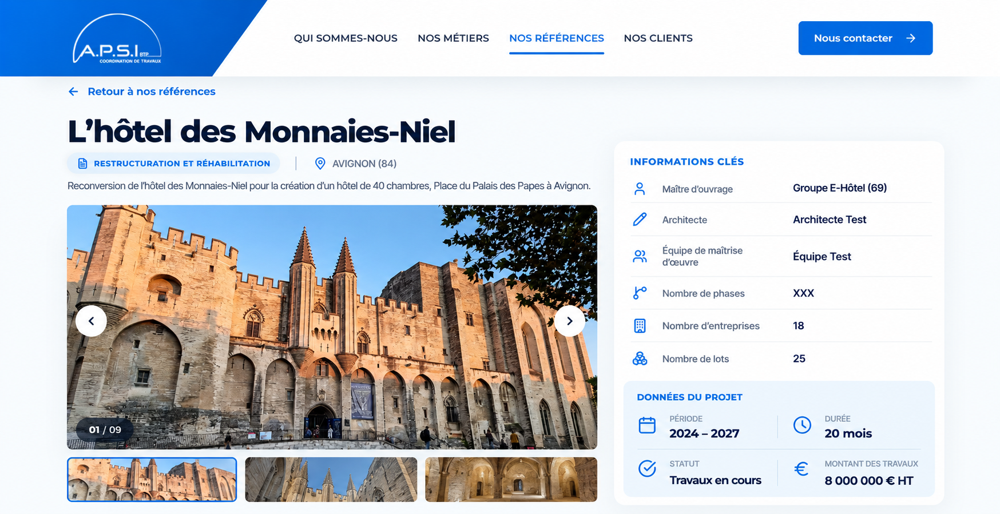
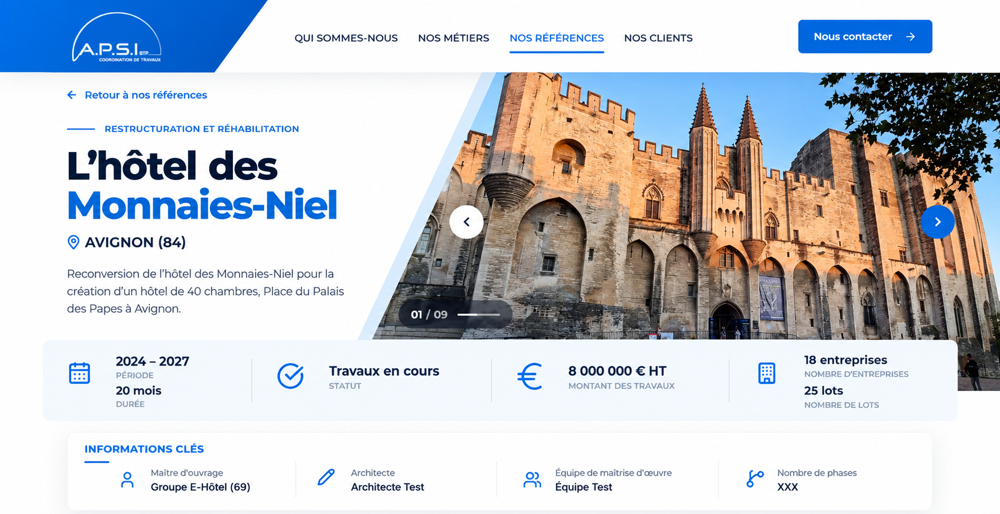
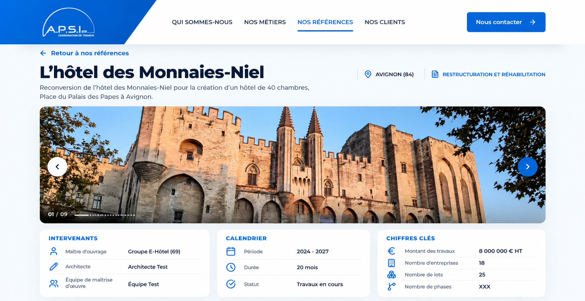
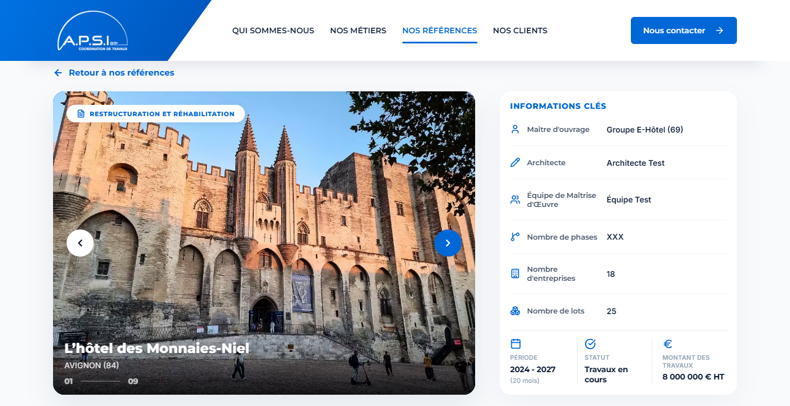
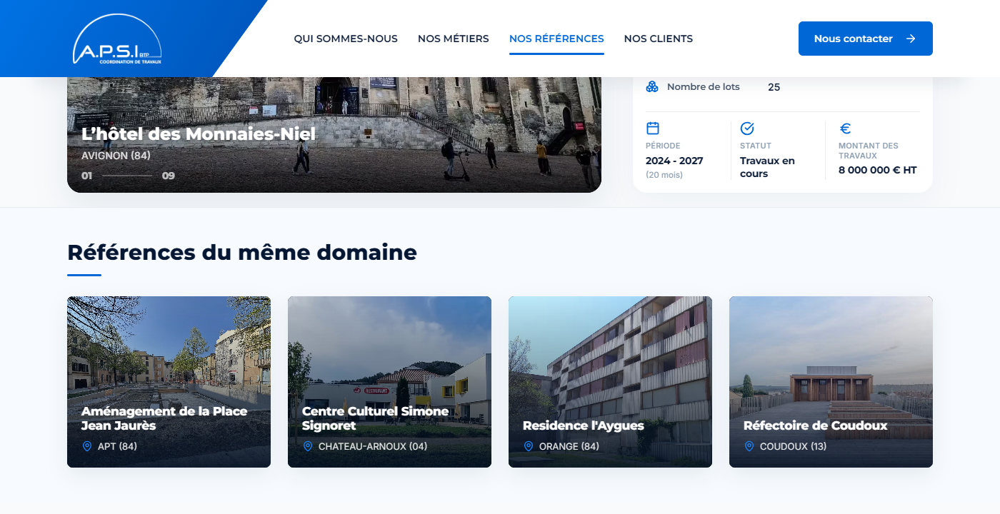

1 · Fiche éditoriale
Titre hors de la photo, grande galerie et vignettes à gauche, fiche d’informations structurée à droite.

2 · Bandeau diagonal
Une présentation cohérente avec les pages validées : titre à gauche, photo en diagonale à droite, puis chiffres et intervenants.

3 · Galerie panoramique
Photo large, puis trois blocs lisibles : intervenants, calendrier et chiffres clés.
Captures actuelles · 1400 × 720

